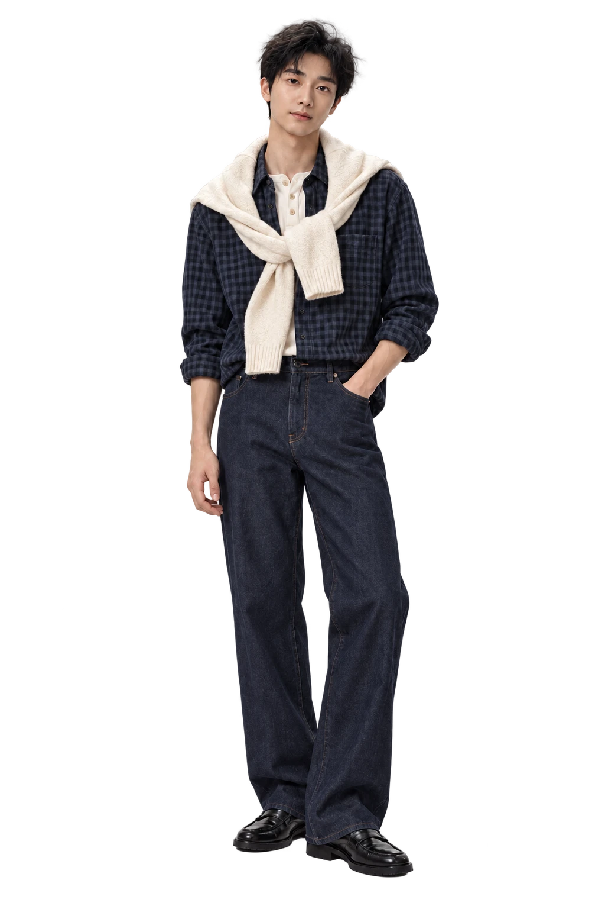
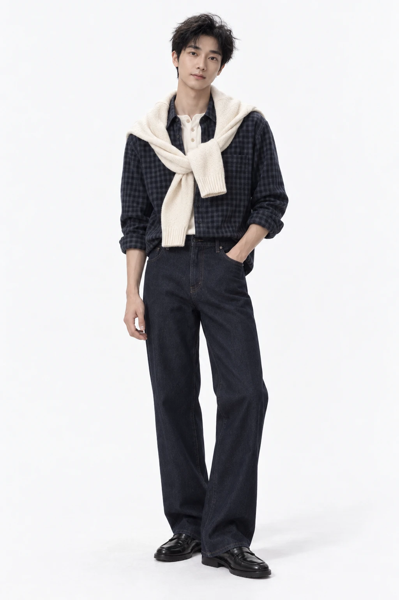

BRAND
让品牌被理解
STRATEGY
POSITIONING
CONTENT & CAMPAIGN
INTEGRATED MARKETING
PERSONAL WORKS · SHANGHAI

A LITTLE INTRODUCTION
你好，我是李俊 William。
从品牌策略、视觉表达，到亲手搭建 AI 产品与硬件原型。
我喜欢把复杂的问题，做成看得见、用得上的作品。
01 / SELECTED WORKS
品牌项目与个人实践
不同领域，同一种好奇心。
品牌案例为过往参与的团队项目；App、AI 与硬件为个人实践。点击图片查看项目详情。
02 / WHAT I BRING
策略 · 表达 · 实现
让品牌被理解
STRATEGY
POSITIONING
CONTENT & CAMPAIGN
INTEGRATED MARKETING
把想法变得可见
VISUAL IDENTITY
UI / UX DESIGN
ART DIRECTION
AI VISUAL STORYTELLING
让好点子真正运转
AI PROTOTYPING
WORKFLOW AUTOMATION
CREATIVE CODING
HARDWARE EXPLORATION
有策略的创意，有落点的技术。

WILLIAM LEE / 李俊03 / THE PERSON BEHIND THE WORK
我在品牌、内容与技术之间工作。经历过平台、代理商和品牌方，也一直保持着亲手实践的习惯。
用策略找到方向，用设计表达清楚，再用 AI 和代码把它做出来。这是我目前最喜欢的工作方式。
HAVE SOMETHING IN MIND?
Hit me up ⤴
williamleo0369@gmail.com ↗